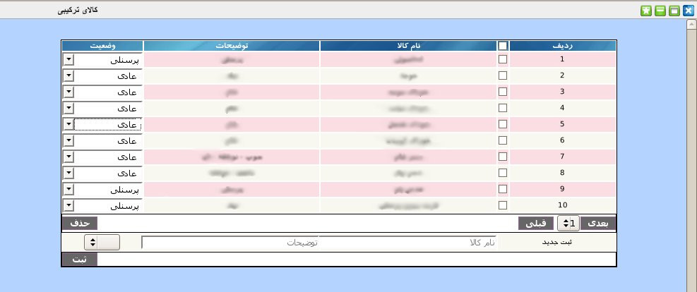

۱-کالای ترکیبی
منظور از کالای ترکیبی کالاهایی است که از ترکیب کالاهای دیگر تولید می شوند. مثلا غذای قرمه سبزی برای سرو در رستوران از لوبیا, سبزی, برنج و ... تشکیل شده است. به منظور تسهیل در محاسبات برای کاربر این پنل طراحی شده است. پنل کالای ترکیبی شامل نام کالا, توضیحات و وضعیت که عادی یا پرسنلی است می باشد.

برای ثبت کالای جدید در پنل پایین جدول نام کالا و توضیحات را وارد نمایید و سپس وضعیت آن را انتخاب نمایید و بر روی دکمه ثبت کلیک نمایید.
جهت ویرایش مقادیر هر آیتم بر روی آن کلیک نمایید و پس از تصحیح کلید Enter را بزنید.
جهت حذف تکی هر آیتم, موس خود را بر روی شماره ردیف آیتم برده و بر روی لینک حذف کلیک نمایید.
جهت حذف گروهی آیتم ها, آیتم های مورد نظر را انتخاب و بر روی دکمه حذف کلیک نمایید.